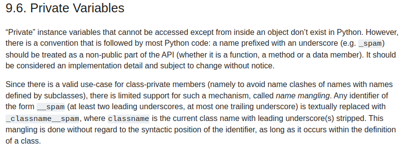

Objektově orientované programování (OOP)#
Základní idea objektově orientované programování spočívá ve sdružení dat a relevantních funkcí do ucelených objektů. Objektem obvykle názýváme právě takovouto abstrakci, např. bankovní účet - objekt sdružující informace o účtu, jeho majiteli a operace na něm (účtu, nikoliv majiteli). Různé objekty pak obvykle popisujeme pomocí třídy/class. Funkce či procedury definované v třídě se nazývají metody třídy, data/proměnné nazýváme atributy.
Často se hovoří o tom, zda ten či onen jazyk podporuje OOP, čímž se obvykle myslí, zda v něm existuje právě něco jako class. Jsou to trochu oddělené koncepty. Třeba v jazyce C nic jako třída neexistuje, ale to neznamená, že se v něm nedá programovat objektově orientovaně. Právě naopak, obvykle se to dělá, ale některých aspektů OOP je těžší dosáhnou (např. dědičnosti).
Třída (class) je pouze jakousi definicí či specifikací dané abstrakce - objektu. Rozličuje pak její konkrétní realizace, nazývané instance. Rozpracujme příklad s bankovním účtem.
class BankAccount:
pass
account1 = BankAccount()
account2 = BankAccount()
V proměnných account1 a account2 jsou dvě různé instance třídy BankAccount (často říkáme objekty typu BankAccount).
print(account1 is account2)
print(type(account1), type(account2))
False
<class '__main__.BankAccount'> <class '__main__.BankAccount'>
Taková třída je víceméně k ničemu - přidejme k ní nějaká data a metody. Instance třídy se obvykle vytvářejí pomocí funkce, která se nazývá konstruktor. Konstruktor má za úkol alokovat paměť pro třídu a jej atributy a případně je inicializovat, tj. přiřadit jim nějakou hodnotu předanou například jako argument konstruktoru.
V Pythonu je konstrukce instance oddělená od inicializace atributů. Na konstruktor, tedy funkci __new__ v podstatě nikdy nesáhneme, ale budeme často psát inicializátor - funkci __init__. V těle inicializátor definujeme atributy třídy a inicializujeme je. Navzdory tomuto faktickému rozdílu se o funkci __init__ běžné hovoří jako o konstruktoru.
class BankAccount:
def __init__(self, name, balance, number):
self.name = name
self.balance = balance
self.number = number
def withdraw(self, amount):
self.balance -= amount
def deposit(self, amount):
self.balance += amount
def report(self):
print(f"Ucet c. {self.number}, {self.name}, zustatek: {self.balance} Kc")
ucet = BankAccount("Vaclav", 127, 123456789)
ucet.deposit(400)
ucet.withdraw(200)
ucet.report()
print(ucet.balance)
Ucet c. 123456789, Vaclav, zustatek: 327 Kc
327
Každá metoda potřebuje mít referenci na samotný objekt - přistupuje pomocí ní k jednotlivým atributům. Python ji automaticky vkládá jako první argument do metod. Je nutné s tím ale s v signaturách funkcí počítat. Volání metody instance fakticky vypádá takto:
BankAccount.deposit(ucet, 400) # dela to same jako ucet.deposit(400)
ucet.report()
Ucet c. 123456789, Vaclav, zustatek: 727 Kc
V pythonu se tento první argument tradičně označuje self - tím tedy instance referuje sama k sobě. V jiných jazycích potkáte například označení this.
class vs instance attributes#
Atributy třídy (class attributes) jsou společné pro celou třídu a její instance. Atributy instance (instance attributes) jsou vázané na konkrétní instanci.
class BankAccount:
pa_percent = 5
def __init__(self, name, balance, number):
self.name = name
self.balance = balance
self.number = number
def withdraw(self, amount):
self.balance -= amount
def deposit(self, amount):
self.balance += amount
def report(self):
print(f"Ucet c. {self.number}, {self.name}, zustatek: {self.balance} Kc")
def earn_monthly_interest(self):
self.balance *= (1 + (self.pa_percent / 100) ** (1/12))
ucet = BankAccount("Vaclav", 127, 123456789)
ucet.deposit(400)
ucet.withdraw(200)
ucet.earn_monthly_interest()
ucet.report()
Ucet c. 123456789, Vaclav, zustatek: 581.7584432338033 Kc
print(BankAccount.pa_percent)
# print(BankAccount.balance) # vyvola vyjimku
5
Magic methods (dunder methods)#
Dunder methods jsou jsou speciální metody, ktéré můžeme implementovat ve svých třídách a dodat jim tím chování, která je v pythonu v jistém smyslu stadardní. Např. voláme-li v pythonu len(x), interpret ve skutečnosti volá x.__len__(). Všechny dunder metody mají před a za názvem dvě podtržítka - odsud ostatně plyne jejich název: double underscore -> double under -> dunder. Kompletní výčet dunder metod najdeme v dokumentaci.
Jiným příkladem může být dunder metoda __add__, která se volá při vyhodnocení výrazů se sčítáním. Tedy x + y znamená x.__add__(y). Ukažme si implementaci obou na příkladu.
class Vector:
def __init__(self, *elements):
self.elements = elements
def __len__(self):
return len(self.elements)
def __add__(self, other):
if len(self) != len(other):
raise ValueError("Vectors do not have the same length")
new_elements = [x+y for x, y in zip(self.elements, other.elements)]
return Vector(*new_elements)
a = Vector(1, 2)
b = Vector(2, 3)
c = a + b
print(c.elements, len(c))
(3, 5) 2
Zajímavým příkladem jsou metody __str__ a __repr__. Obě se používají pro konverzi objektu na string, ale každá s jiným záměrem. Zatímco __str__ může vést na jakoukoliv stringovou reprezentaci (evokováno voláním str(x)), __repr__ má produkovat string, který je strojově zpracovatelný. Implementujme tyto metody pro bankovní účet z úvodu.
class BankAccount:
def __init__(self, name, balance, number):
self.name = name
self.balance = balance
self.number = number
def withdraw(self, amount):
self.balance -= amount
def deposit(self, amount):
self.balance += amount
def report(self):
print(str(self))
def __str__(self):
return f"Ucet c. {self.number}, {self.name}, zustatek: {self.balance} Kc"
def __repr__(self):
return f"{self.__class__.__name__}('{self.name}', {self.balance}, {self.number})"
ucet = BankAccount("Vaclav", 200, 123456789)
ucet.deposit(50)
repstring = repr(ucet)
print(repstring)
ucet2 = eval(repstring)
print(ucet2)
BankAccount('Vaclav', 250, 123456789)
Ucet c. 123456789, Vaclav, zustatek: 250 Kc
Posledním příkladem může být třeba dunder __call__, který definuje na objektu operaci kulatá závorka. Udělejme z polynom z kapitoly o funkcích objekt.
class Polynomial:
"""Returns a callable Polynomial object."""
def __init__(self, *coefs):
self.coefs = coefs
def __call__(self, x):
val = self.coefs[-1]
for c in reversed(self.coefs[:-1]):
val = val * x + c
return val
def order(self):
return len(self.coefs - 1)
import matplotlib.pyplot as plt
import numpy as np
x = np.linspace(-3, 1, 201)
p = Polynomial(1, 2, 1)
y = p(x)
plt.plot(x, y)
plt.show()
public vs. private#
Např. v C++ rozlišujeme privátní a veřejné atributy (případně protected).
class BankAccount {
public:
int get_balance() { return balance; }
private:
int deposit;
};
BankAccount ucet = BankAccount();
printf("%d\n", ucet.get_balance()); // ok
printf("%s\n", ucet.balance); // big no no ~ Cannot access private member
V pythonu se private a public vůbec nerozlišuje:
We are all consenting adults. (Anyone can touch your privates.)
Občas se o tom vedou spory, ale dokumentace o tom hovoří celkem přímočaře:

class BankAccount:
def __init__(self, balance):
self.balance = balance
ucet = BankAccount(200)
ucet.balance = 100000 # tohle nechceme
print(ucet.balance)
100000
Konvence říká, že atributy s prefixem jednoho podtržíka se považuje za privátní. Ale python nic takového samozřejmě nevynucuje. Vývojová prostředí na to ale typicky upozorňují.
class BankAccount:
def __init__(self, balance):
self._balance = balance
ucet = BankAccount(200)
ucet._balance = 100000 # tohle nechceme
print(ucet._balance)
100000
Dokumentace zmiňuje dvojité podtržítko jako možnost, jak dosáhnout private chování, ale ve skutečnosti je zatím jiný mechanismus (name mangling) s jinou motivací (name clashes u dědičnosti).
class BankAccount:
def __init__(self, balance):
self.__balance = balance
ucet = BankAccount(200)
# ucet.__balance = 100000 # tohle nefunguje
ucet._BankAccount__balance = 100000 # tohle ale ano
print(ucet._BankAccount__balance)
100000
Osobní názor
Python nemá mechanismus pro rozlišování public/private a proto bychom neměli takové chování vynucovat. Atributy míněné jako private označme jedním podtržítkem. Pokud potřebujete normální public/private chování, použijte jiný jazyk.
Getter a setter#
Pomocí zabudovaných dekorátorů můžeme třídu doplnit o getter a setter - umožňující kontrolu nad přiřazováním a navracením (private) hodnot.
class Person:
def __init__(self, name):
self.name = name
self._rc = None
@property
def rc(self):
return self._rc
@rc.setter
def rc(self, cislo):
if (cislo % 11) != 0:
raise ValueError("Please enter a valid rodne cislo")
self._rc = cislo
person = Person("Vaclav")
person.rc = 9904100129
print(person.rc)
9904100129
Statické metody, metody třídy a metody instance#
Metody, které jsme dosud viděli, jsou metody instance, tj. potřebují vazbu na konkrétní instanci (první argument je reference na instanci).
Kromě toho můžeme definovat metody třídy, které mají reference pouze na třídu (nikoliv instanci).
Statické metody fungují bez vazby na třídu či instanci. Necháváme je ve třídě, protože např. tematicky souvisí, ale ke své funkci fakticky referenci na třídu nepotřebují.
Statické metody či metody třídy se často používají třeba pro implimentaci více “konstruktorů”, protože v pythonu nemáme přetěžování funkcí.
import math
class Circle:
def __init__(self, radius):
self.radius = radius
def area(self):
return math.pi * self.radius ** 2
@classmethod
def from_diameter(cls, diameter):
radius = diameter / 2
return cls(radius)
@classmethod
def from_area(cls, area):
radius = math.sqrt(area / math.pi)
@staticmethod
def is_valid(radius):
return radius > 0
Circle.is_valid(-3)
False
Dataclass#
import json
class Config:
def __init__(self, logfile, check_updates):
self.logfile = logfile
self.check_updates = check_updates
def save_to_file(self, filename):
d = {
"logfile": self.logfile,
"check_updates": self.check_updates
}
with open(filename, "w") as file:
json.dump(d, file)
@staticmethod
def load_from_file(filename):
with open(filename, "r") as file:
data = json.load(file)
return Config(**data)
cfg1 = Config("file.log", True)
cfg1.save_to_file("pokus.json")
cfg2 = Config.load_from_file("pokus.json")
print(cfg2.logfile)
file.log
from dataclasses import dataclass, asdict
import json
@dataclass
class Config:
logfile: str
check_updates: bool
def save_to_file(self, filename):
with open(filename, "w") as file:
json.dump(asdict(self), file)
@staticmethod
def load_from_file(filename):
with open(filename, "r") as file:
data = json.load(file)
return Config(**data)
cfg1 = Config("file.log", True)
cfg1.save_to_file("pokus.json")
cfg2 = Config.load_from_file("pokus.json")
print(cfg2)
Config(logfile='file.log', check_updates=True)
Iterátory a generátory#
Když iterujeme přes kolekci
lst = [1, 2, 3]
for x in lst:
print(x)
1
2
3
python ve skutečnosti provádí něco takového:
lst = [1, 2, 3]
iter_obj = iter(lst)
while True:
try:
x = next(iter_obj)
print(x)
except StopIteration:
break
1
2
3
Tedy v duchu Duck typing, iterátor je něco, co dostaneme, když zavoláme funkci iter, a můžeme na tom volat funkci next, dokud to nevyhodí výjimku StopIteration.
Když si ještě řekneme, že iter(obj) ve skutečnosti volá obj.__iter__() a next(obj) ve skutečnosti volá obj.__next__(), můžeme si napsat vlastní iterátor.
# vlastni iterator
class Iterator:
def __init__(self, data):
self.data = data
self.index = 0
def __iter__(self):
return self
def __next__(self):
if self.index == len(self.data):
raise StopIteration
self.index += 1
return self.data[self.index - 1]
test = Iterator([1,2,3,5,6])
for i in test:
print(i)
1
2
3
5
6
class Fibonacci:
def __init__(self, n=10):
self.curr = 1
self.last = 0
self.it = 1
self.n = n
def __iter__(self):
return self
def __next__(self):
if self.it > self.n:
raise StopIteration
self.it += 1
ret = self.last
self.last, self.curr = self.curr, self.curr + self.last
return ret
for fib in Fibonacci(6):
print(fib)
0
1
1
2
3
5
def fib(n):
a, b = 0, 1
for _ in range(n):
yield a
a, b = b, a + b
print(type(fib(10)))
for i in fib(10):
print(i)
<class 'generator'>
0
1
1
2
3
5
8
13
21
34